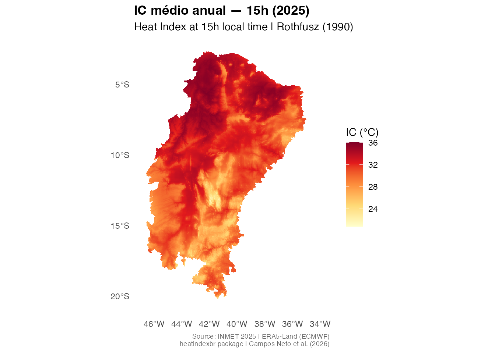

O heatindexbr disponibiliza rasters do Índice de Calor
(Rothfusz 1990) com resolução de ~1 km para os 1.477 municípios do
Semiárido Brasileiro oficial (Res. CONDEL/SUDENE 176/2024). Esta
vignette apresenta o fluxo de uso principal: busca → download → extração
→ visualização.
Instalação
# Instale pelo GitHub
remotes::install_github("antcneto/heatindexbr")Quais dados estão disponíveis?
Use hi_available() para ver os anos, resoluções e
horários sinóticos disponíveis:
hi_available()
#> ℹ Repository: <https://doi.org/10.5281/zenodo.20942619>
#> ℹ Use `hi_download()` to access available products.
#> year resolution hours status
#> 1 2025 annual 00h, 09h, 15h, 21h available
#> 2 2025 monthly 00h, 09h, 15h, 21h (Jan-Dec) in preparation
#> 3 2025 daily 00h, 09h, 15h, 21h (all 365 days) in preparation
#> 4 2025 hourly all hours in preparationBusca de municípios
Os nomes de municípios no heatindexbr seguem o padrão
IBGE: maiúsculas sem acentos. Use
hi_search() para encontrar o nome correto:
# Busca parcial, sem distinção de maiúsculas
hi_search("Mossoro", state = "RN")
#> code_muni name_muni abbrev_state
#> 500 2408003 MOSSORO RN
hi_search("Campina Grande", state = "PB")
#> code_muni name_muni abbrev_state
#> 904 2504009 CAMPINA GRANDE PBAtenção: sempre utilize o valor da coluna
name_muniretornado porhi_search()ao chamarhi_municipality(). Por exemplo,"MOSSORO"e não"Mossoró". Esta é uma limitação do padrão de nomenclatura do IBGE; a funçãohi_search()existe exatamente para facilitar essa conversão.
Extração do Índice de Calor para um município
hi_municipality() baixa o raster (armazenado em cache na
primeira vez), recorta para o limite municipal e retorna estatísticas
resumidas com classificação NOAA:
resultado <- hi_municipality("MOSSORO", state = "RN", hour = "15h")
resultado
#> code_muni name_muni abbrev_state mean hour year resolution
#> 1 2408003 MOSSORO RN 34.22471 15h 2025 annual
#> noaa_class
#> 1 Extreme cautionA coluna noaa_class utiliza os limites oficiais da
escala NOAA:
| Classe | IC | Risco |
|---|---|---|
| Sem cautela | < 27°C | Baixo |
| Cautela | 27–32°C | Fadiga com exposição prolongada |
| Cautela extrema | 32–41°C | Cãibras ou exaustão por calor possíveis |
| Perigo | 41–54°C | Exaustão por calor provável |
| Perigo extremo | > 54°C | Insolação iminente |
Para obter todos os quatro horários sinóticos de uma vez, use
hour = NULL:
hi_municipality("MOSSORO", state = "RN", hour = NULL)Download e visualização do raster completo
hi_download() retorna um SpatRaster (pacote
terra). O raster é baixado uma única vez e reutilizado do cache nas
chamadas seguintes:
r <- hi_download(year = 2025, hour = "15h")
#> ✔ Using cached:
#> /Users/antcneto/Library/Caches/org.R-project.R/R/heatindexbr/IC_2025_annual_all.tif
r
#> class : SpatRaster
#> size : 1983, 1299, 1 (nrow, ncol, nlyr)
#> resolution : 999.7408, 999.9794 (x, y)
#> extent : 5799573, 7098237, 7714924, 9697883 (xmin, xmax, ymin, ymax)
#> coord. ref. : SIRGAS 2000 / Brazil Polyconic (EPSG:5880)
#> source : IC_2025_annual_all.tif
#> name : IC_15h
#> min value : 20.40742
#> max value : 36.13178Passe o raster diretamente para hi_plot() para gerar o
mapa:
hi_plot(r,
title = "IC médio anual — 15h (2025)",
hour = "15h",
year = 2025)
#> <SpatRaster> resampled to 501000 cells.
Extração para polígono personalizado
Se você tiver um objeto sf próprio (bacia hidrográfica,
limite estadual, área de estudo), use hi_shape():
Nota técnica sobre o raster
O raster base (IC_2025_annual_all.tif) está em
EPSG:5880 (SIRGAS 2000 / Brazil Polyconic) — o SRC
projetado adequado para o Brasil. A versão em WGS84 possui um artefato
de recorte na borda leste e não deve ser utilizada. Consulte
vignette("methodology") para detalhes completos sobre o
método de interpolação.
Como citar
Se você utilizar o heatindexbr em sua pesquisa, por
favor cite:
citation("heatindexbr")Ou cite diretamente o conjunto de dados no Zenodo:
Campos Neto, A. (2025). heatindexbr: rasters de Índice de Calor para o Semiárido Brasileiro (v0.1.0). Zenodo. https://doi.org/10.5281/zenodo.20942619